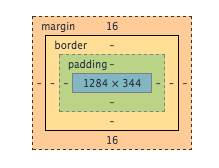
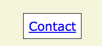

Margin, Border, & Padding: The Differences in CSS
April 19th, 2015
While building my site over the last few days, I've had quite a bit of experience working with CSS. It is a powerful, effective way to manipulate objects (text, boxes, images, or whatever) on a page. In CSS, you can add attributes to objects that can change the Margin, Padding, and Border of objects.
As you can see in the above image, the margin is the area outside of the actual object. You can increase the margins to keep objects farther away from each other. If you look at the button below, the margin is the beige space between the button and the rest of the page. All the dimensions (top, bottom, left, and right) of the margin can be changed together or separately in CSS.
Next, the border is the black line between the beige background and the white interior of the button. This line can be dotted or solid, in any color, and have any desired thickness. All these settings can be changed in CSS.
Finally, the padding is the space within the border. This is the white space between the text and the border in the button. You can adjust the dimensions of this in CSS to make the space between the border and the object larger.